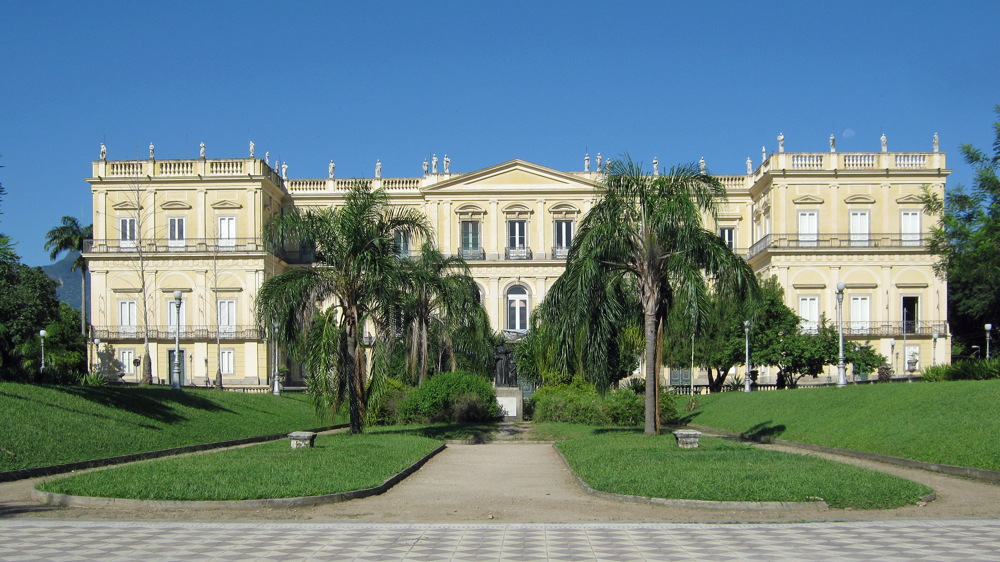

- 
-

-

EXPOSIÇÕES
Nossas exposições no Palácio de São Cristóvão estão fechadas ao público por tempo indeterminado em virtude do incêndio que destruiu grande parte de nossas coleções. No entanto, atualmente contamos com três exibições temporárias:
“Quando Nem Tudo Era Gelo – Novas Descobertas no Continente Antártico” narra a rotina e as descobertas de pesquisadores brasileiros na Antártida e ocorre no prédio que foi a primeira sede do Museu Nacional, hoje Museu Casa da Moeda do Brasil.
Santo Antônio de Sá: Primeira Vila do Recôncavo da Guanabara reúne relíquias arqueológicas do Museu Nacional e ocorre na Caixa Cultural do Rio de Janeiro.
Os Primeiros Brasileiros retrata diferentes olhares sobre os indígenas no Brasil e ocorre na sede do Arquivo Nacional, no Centro do Rio de Janeiro.